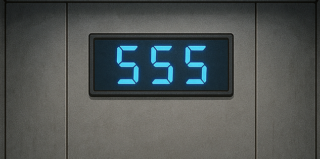
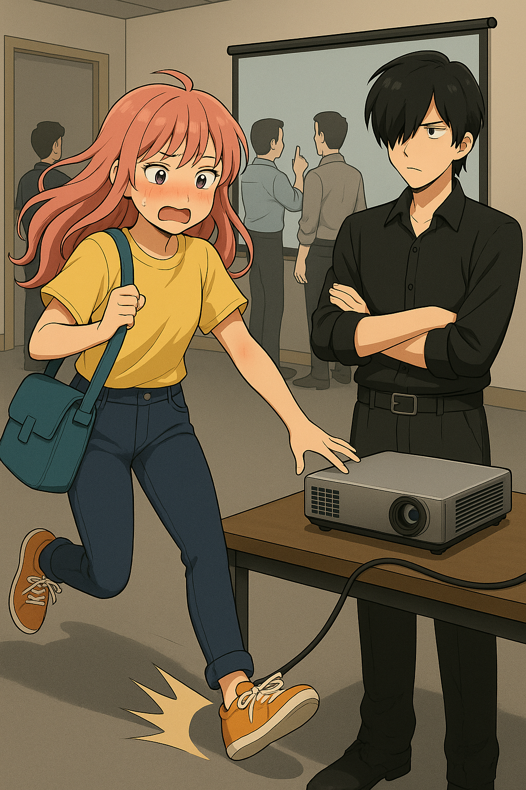

【正文】
01｜提前打卡？
清晨6点半，天光刚亮。
肖笑笑背着工具包小跑进了大厦，希望不要再碰到霉运男。
货梯间空无一人，进门，输入666，蹲好，顺利到达顶层。
她刷卡打卡，正要进入大厅，门却没开——系统提示：尚未开放。
OS：来太早了……还不如睡一会儿。
她靠在落地窗边坐下，看着海平线上升起的太阳，金光洒在玻璃上，仿佛整个城市都被唤醒。
她轻轻吸了一口气，嘴角扬起，期盼崭新的一天。
02｜北极工位
一小时过后，门禁终于开放，前台小姐姐也来了。
她笑着说：“你的工位安排好了，在北边最角落一排。”
终于，找到了！——角落工位写着她的名字。
OS：噢耶，我终于不是文印区临时工了！
正准备坐下，头顶空调突如其来——呼呼直吹。
OS：……是北极工位没错了。
03｜被调去555层
刚坐下不到五分钟，座位上的电话响起。
“喂，IT？555层投影仪故障，马上来一下。”
笑笑看了看刚泡的茶。
OS：说好的我的工位呢……
她抓起工具包，又冲进货梯，熟练按下“555”。

04｜帮霉运男修投影仪
研发层会议室内，技术人员围着投影仪七嘴八舌。
肖笑笑刚推门进去，脚下一滑，差点摔倒，众人齐刷刷回头。
OS：我是谁？我在哪？能装作不是我吗……
最前面是熟悉的黑衬衫男，又是他！这次准没好事！果然，霉运男冷冷看她一眼：“你们外包终于来了。”
他指着投影仪：“快看看，投什么都没反应。”
笑笑低头一看，DP线接到HDMI口上了。
“这……这不是你们自己插错的吗？”
“少废话，赶紧搞定。”霉运男语气不善。
笑笑心里翻了个大白眼，嘴角挂着职业假笑，啪地拔掉线重新插好。
投影仪亮了，全场鸦雀无声。
霉运男挑眉：“你叫什么？”
“肖笑笑。”
他点头：“郑正真。”
肖笑笑嘴角一抽，差点没忍住笑出声。
OS：真真正？你这是名字还是绕口令？
OS：以后见到这人，我一定绕远点。
